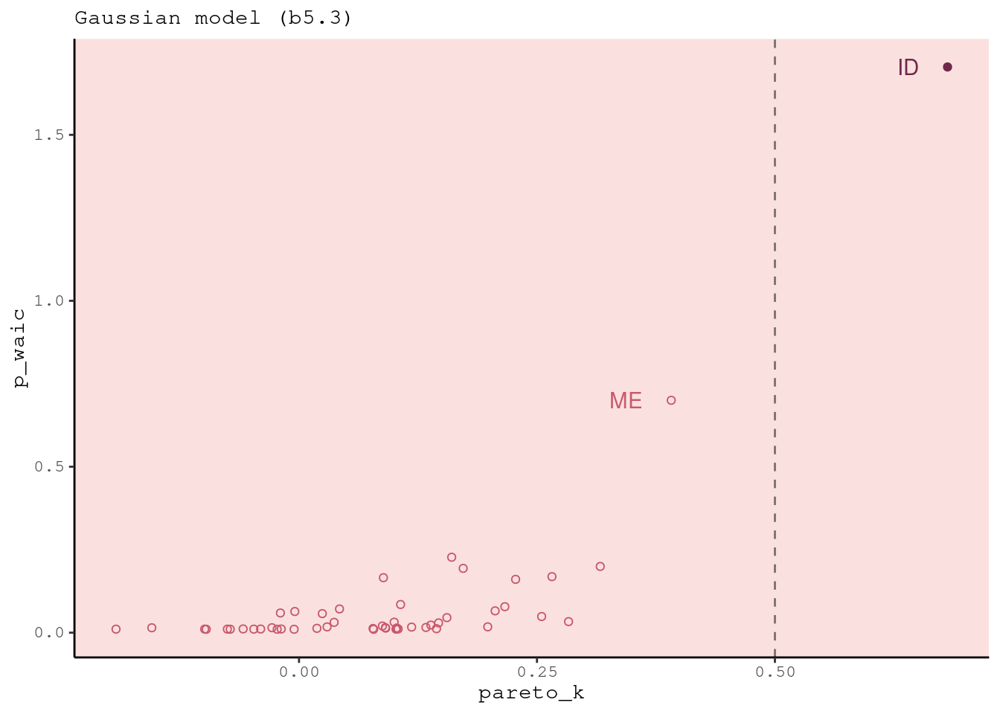

7.5 Model comparison
Road so far:
- When there are several plausible (and hopefully un-confounded) models for the same set of observations, how should we compare the accuracy of these models?
- We need to somehow evaluate models out-of-sample. How can we do that? A meta-model of forecasting tells us two important things. First, flat priors produce bad predictions. Regularizing priors—priors which are skeptical of extreme parameter values—reduce fit to sample but tend to improve predictive accuracy.
- Second, we can get a useful guess of predictive accuracy with the criteria CV, PSIS, and WAIC. Regularizing priors and CV/PSIS/WAIC are complementary. Regularization reduces overfitting, and predictive criteria measure it.
You should never just keep the model that scores the best, and discard the rest. This kind of selection procedure discards the information about relative model accuracy contained in the differences among the CV/PSIS/WAIC values. Why are the differences useful? Because sometimes the differences are large and sometimes they are small. Just as relative posterior probability provides advice about how confident we might be about parameters (conditional on the model), relative model accuracy provides advice about how confident we might be about models (conditional on the set of models compared).

Avoid model selection. We want to score the expected overfitting models to understand their properties. In the sciences we usually have an inferential objective, rather than a predictive one. But if you intend to intervene in the world, then we don’t want to use these criteria to select a model, but rather to compare them.
7.5.1. Model mis-selection
Remember: Inferring cause and making predictions are different tasks. Cross-validation and WAIC aim to find models that make good predictions.
Run models from previous chapter again:
b6.6 <- readRDS("fits/b06.06.rds")
b6.7 <- readRDS("fits/b06.07.rds")
b6.8 <- readRDS("fits/b06.08.rds")brms::waic(b6.7)##
## Computed from 4000 by 100 log-likelihood matrix
##
## Estimate SE
## elpd_waic -180.7 6.7
## p_waic 3.5 0.5
## waic 361.5 13.4As recommended, add the waic estimates to the brm() fit object itself.
b6.7 <- brms::add_criterion(b6.7, criterion = "waic")b6.7$criteria$waic##
## Computed from 4000 by 100 log-likelihood matrix
##
## Estimate SE
## elpd_waic -180.7 6.7
## p_waic 3.5 0.5
## waic 361.5 13.4![Smaller numbers are better, so the top model is 6.7 that includes the fungus. Can probably see the difference here. The fungus is what's causal. Inference about cause and finding a predictive model aren't the same thing. So you need to do both, but keep in mind that they're different. Because you haven't necessarily inferred a cause if you have good prediction error, because you might have blocked a pipe. Even spurious correlations are useful. The confounding really matters when you want to intervene. The highest preditive model won't necessary predict what will happen when you intervene.](slides/L08/30.png)
Smaller numbers are better, so the top model is 6.7 that includes the fungus. Can probably see the difference here. The fungus is what’s causal. Inference about cause and finding a predictive model aren’t the same thing. So you need to do both, but keep in mind that they’re different. Because you haven’t necessarily inferred a cause if you have good prediction error, because you might have blocked a pipe. Even spurious correlations are useful. The confounding really matters when you want to intervene. The highest preditive model won’t necessary predict what will happen when you intervene.
# compute and save the WAIC information for the next three models
b6.6 <- brms::add_criterion(b6.6, criterion = "waic")
b6.8 <- brms::add_criterion(b6.8, criterion = "waic")
# compare the WAIC estimates
w <- brms::loo_compare(b6.6, b6.7, b6.8, criterion = "waic")
print(w)## elpd_diff se_diff
## b6.7 0.0 0.0
## b6.8 -20.5 4.9
## b6.6 -22.1 5.8print(w, simplify = F)## elpd_diff se_diff elpd_waic se_elpd_waic p_waic se_p_waic waic se_waic
## b6.7 0.0 0.0 -180.7 6.7 3.5 0.5 361.5 13.4
## b6.8 -20.5 4.9 -201.2 5.4 2.5 0.3 402.5 10.8
## b6.6 -22.1 5.8 -202.9 5.7 1.5 0.2 405.7 11.3cbind(waic_diff = w[, 1] * -2,
se = w[, 2] * 2)## waic_diff se
## b6.7 0.00000 0.000000
## b6.8 41.03941 9.832777
## b6.6 44.28358 11.564703
w[, 7:8] %>%
data.frame() %>%
rownames_to_column("model_name") %>%
mutate(model_name = fct_reorder(model_name, waic, .desc = T)) %>%
ggplot(aes(x = waic, y = model_name,
xmin = waic - se_waic,
xmax = waic + se_waic)) +
geom_pointrange(color = carto_pal(7, "BurgYl")[7],
fill = carto_pal(7, "BurgYl")[5], shape = 21) +
labs(title = "My custom WAIC plot",
x = NULL, y = NULL) +
theme(axis.ticks.y = element_blank())
n <- length(b6.7$criteria$waic$pointwise[, "waic"])
tibble(waic_b6.7 = b6.7$criteria$waic$pointwise[, "waic"],
waic_b6.8 = b6.8$criteria$waic$pointwise[, "waic"]) %>%
mutate(diff = waic_b6.7 - waic_b6.8) %>%
summarise(diff_se = sqrt(n * var(diff)))## # A tibble: 1 × 1
## diff_se
## <dbl>
## 1 9.83brms::loo_compare(b6.6, b6.7, b6.8, criterion = "waic") %>%
str()## 'compare.loo' num [1:3, 1:8] 0 -20.52 -22.14 0 4.92 ...
## - attr(*, "dimnames")=List of 2
## ..$ : chr [1:3] "b6.7" "b6.8" "b6.6"
## ..$ : chr [1:8] "elpd_diff" "se_diff" "elpd_waic" "se_elpd_waic" ...brms::loo_compare(b6.6, b6.8, criterion = "waic")## elpd_diff se_diff
## b6.8 0.0 0.0
## b6.6 -1.6 2.4loo_compare(b6.6, b6.8, criterion = "waic")[2, 2] * 2## [1] 4.7431497.5.2. Outliers and other illusions
In the divorce example from Chapter 5, we saw in the posterior predictions that a few States were very hard for the model to retrodict. The State of Idaho in particular was something of an outlier. Individual points like Idaho tend to be very influential in ordinary regression models. Let’s see how PSIS and WAIC represent that importance.
data(WaffleDivorce, package = "rethinking")
d <-
WaffleDivorce %>%
mutate(d = rethinking::standardize(Divorce),
m = rethinking::standardize(Marriage),
a = rethinking::standardize(MedianAgeMarriage))
rm(WaffleDivorce)
# Refit the divorce models
b5.1 <-
brm(data = d,
family = gaussian,
d ~ 1 + a,
prior = c(prior(normal(0, 0.2), class = Intercept),
prior(normal(0, 0.5), class = b),
prior(exponential(1), class = sigma)),
iter = 2000, warmup = 1000, chains = 4, cores = 4,
seed = 5,
sample_prior = T,
file = "fits/b05.01")
b5.2 <-
brm(data = d,
family = gaussian,
d ~ 1 + m,
prior = c(prior(normal(0, 0.2), class = Intercept),
prior(normal(0, 0.5), class = b),
prior(exponential(1), class = sigma)),
iter = 2000, warmup = 1000, chains = 4, cores = 4,
seed = 5,
file = "fits/b05.02")
b5.3 <-
brm(data = d,
family = gaussian,
d ~ 1 + m + a,
prior = c(prior(normal(0, 0.2), class = Intercept),
prior(normal(0, 0.5), class = b),
prior(exponential(1), class = sigma)),
iter = 2000, warmup = 1000, chains = 4, cores = 4,
seed = 5,
file = "fits/b05.03")Let’s compare these models with PSIS
b5.1 <- add_criterion(b5.1, criterion = "loo")
b5.2 <- add_criterion(b5.2, criterion = "loo")
b5.3 <- add_criterion(b5.3, criterion = "loo")
loo_compare(b5.1, b5.2, b5.3, criterion = "loo") %>%
print(simplify = F)## elpd_diff se_diff elpd_loo se_elpd_loo p_loo se_p_loo looic se_looic
## b5.1 0.0 0.0 -62.9 6.4 3.6 1.8 125.7 12.8
## b5.3 -1.0 0.4 -63.8 6.4 4.8 1.9 127.7 12.9
## b5.2 -6.8 4.6 -69.7 4.9 3.0 0.9 139.3 9.9First note that the model that omits marriage rate, m5.1, lands on top. This is because marriage rate has very little association with the outcome. So the model that omits it has slightly better expected out-of-sample performance, even though it actually fits the sample slightly worse than m5.3, the model with both predictors.
Some Pareto k values are very high (>1). means that the smoothing approximation that PSIS uses is unreliable for some points.
Let’s look at the individual States, to see which are causing the problem. We can do this by adding pointwise=TRUE to PSIS. When you do this, you get a matrix with each observation on a row and the PSIS information, including individual Pareto k values, in columns.
loo::loo(b5.3) %>%
loo::pareto_k_ids(threshold = 0.5)## [1] 13d %>%
slice(13) %>%
dplyr::select(Location:Loc)## Location Loc
## 1 Idaho IDb5.3 <- add_criterion(b5.3, "waic", file = "fits/b05.03")
tibble(pareto_k = b5.3$criteria$loo$diagnostics$pareto_k,
p_waic = b5.3$criteria$waic$pointwise[, "p_waic"],
Loc = pull(d, Loc)) %>%
ggplot(aes(x = pareto_k, y = p_waic, color = Loc == "ID")) +
geom_vline(xintercept = .5, linetype = 2, color = "black", alpha = 1/2) +
geom_point(aes(shape = Loc == "ID")) +
geom_text(data = . %>% filter(p_waic > 0.5),
aes(x = pareto_k - 0.03, label = Loc),
hjust = 1) +
scale_color_manual(values = carto_pal(7, "BurgYl")[c(5, 7)]) +
scale_shape_manual(values = c(1, 19)) +
labs(subtitle = "Gaussian model (b5.3)") +
theme(legend.position = "none")
One way to both use these extreme observations and reduce their influence is to employ some kind of ROBUST REGRESSION. A “robust regression” can mean many different things, but usually it indicates a linear model in which the influence of extreme observations is reduced. A common and useful kind of robust regression is to replace the Gaussian model with a thicker-tailed distribution like STUDENT’S T (or “Student-t”) distribution.
Let’s re-estimate the divorce model using a Student-t distribution with \(v = 2\).
b5.3t <-
brm(data = d,
family = student,
bf(d ~ 1 + m + a, nu = 2),
prior = c(prior(normal(0, 0.2), class = Intercept),
prior(normal(0, 0.5), class = b),
prior(exponential(1), class = sigma)),
iter = 2000, warmup = 1000, chains = 4, cores = 4,
seed = 5,
file = "fits/b05.03t")print(b5.3t)## Family: student
## Links: mu = identity; sigma = identity; nu = identity
## Formula: d ~ 1 + m + a
## nu = 2
## Data: d (Number of observations: 50)
## Samples: 4 chains, each with iter = 2000; warmup = 1000; thin = 1;
## total post-warmup samples = 4000
##
## Population-Level Effects:
## Estimate Est.Error l-95% CI u-95% CI Rhat Bulk_ESS Tail_ESS
## Intercept 0.03 0.10 -0.17 0.23 1.00 4082 2803
## m 0.05 0.20 -0.34 0.47 1.00 3549 3105
## a -0.70 0.14 -0.99 -0.42 1.00 3546 2945
##
## Family Specific Parameters:
## Estimate Est.Error l-95% CI u-95% CI Rhat Bulk_ESS Tail_ESS
## sigma 0.58 0.08 0.43 0.76 1.00 3945 2833
## nu 2.00 0.00 2.00 2.00 1.00 4000 4000
##
## Samples were drawn using sampling(NUTS). For each parameter, Bulk_ESS
## and Tail_ESS are effective sample size measures, and Rhat is the potential
## scale reduction factor on split chains (at convergence, Rhat = 1).b5.3t <- add_criterion(b5.3t, criterion = c("loo", "waic"))
Incredibly clever and diabolical. Interested in life history evolution. Something to understand by looking at the whole field. Here’s a dataset to consider. Why does lifespan vary so much? A typcial kind of conceptual model is this idea that body mass = fewer things kill you = living longer. And brain size = smart = avoiding danger. Should also season your DAG with some unobserved confounds.
![After you remove all the missing values, you get three models. The first is the industry standard m7.8 everyone expects to be the right prediction model. WIf we wnat ot figure out the infleucne of brainsize on lifespan, we need to block the backdoor path on body mass. Black dots are the in-sample, and open are the WAIC scores. Bars are standard errors. 7.8 and 7.9 are basically equivalent in their out-of-sample predictions. When you see something like this, you should see this as an invitiation to poke inside them. You can use IC to do that poiking.](slides/L08/34.png)
After you remove all the missing values, you get three models. The first is the industry standard m7.8 everyone expects to be the right prediction model. WIf we wnat ot figure out the infleucne of brainsize on lifespan, we need to block the backdoor path on body mass. Black dots are the in-sample, and open are the WAIC scores. Bars are standard errors. 7.8 and 7.9 are basically equivalent in their out-of-sample predictions. When you see something like this, you should see this as an invitiation to poke inside them. You can use IC to do that poiking.
bM is the slope for body mass, and bB is the slope for brain size. 7.9 only has bM, and says there’s a positive correlation. The model with both has this catastrophic flipping. Now bM is negative? What’s going on here?

The thing to do here is to do WAIC point-wise. For each species in the sample, say the Capuchin monkey which has those life history characteristics, which model expects to do the best out-of-sample on organisms with those same covariates? Or you could think about it as entropy scores, or divergence scores, to say how surprised is this model by a Capuchin monkey? The relative surprise between these models is plotted.

The model with brain + mass does better with Capuchins because they have small brains, but they’re really big for their body size. So if you don’t control for body size, you can’t explain their longevity. So the model without body size is really surprised by Cebus. Lepilemur on the other extreme with small brains and extremely short lifespans, where you’d be surprised if you ignore body size.

On the other hand, for these you can make fine predictions by knowing body size. So you can understand how they perform if you look point-wise. This is a principled way to inspect and understand your golem. Also a way to find your high-leverage points.